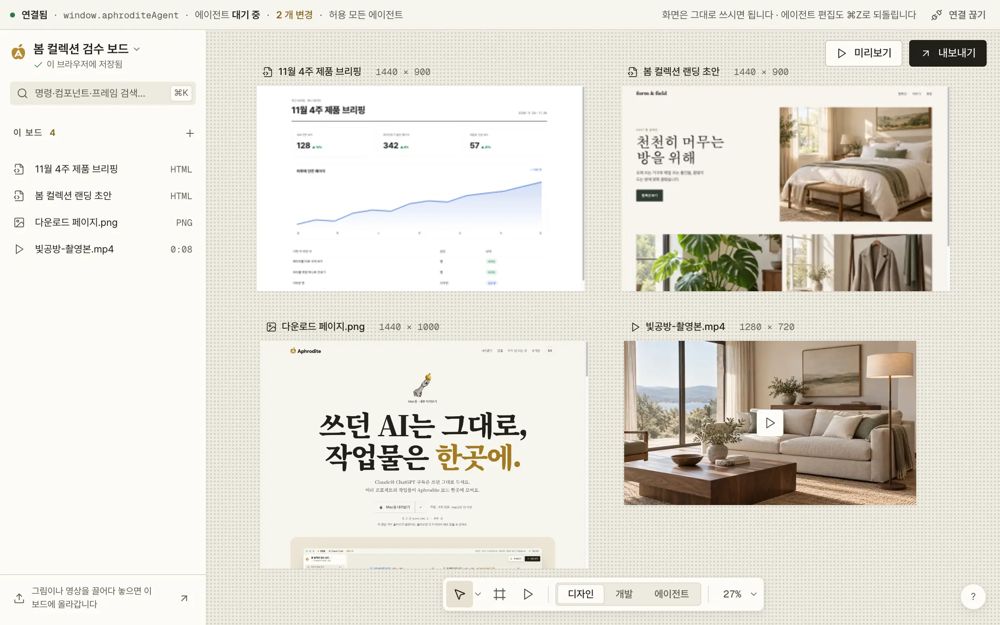
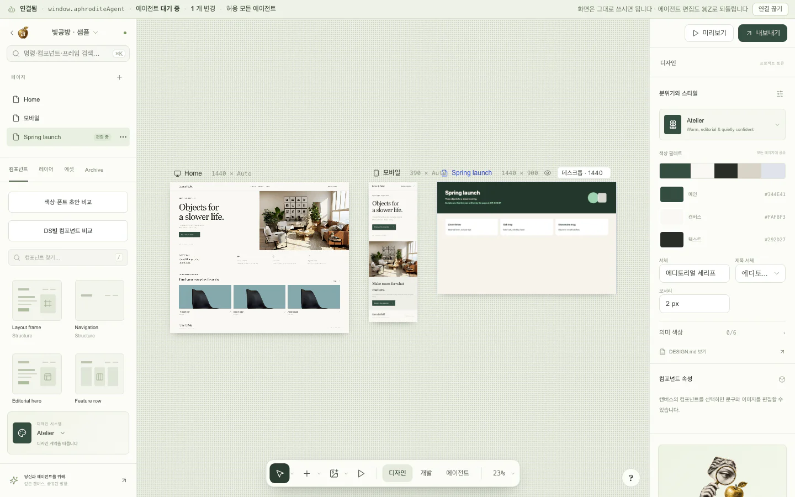
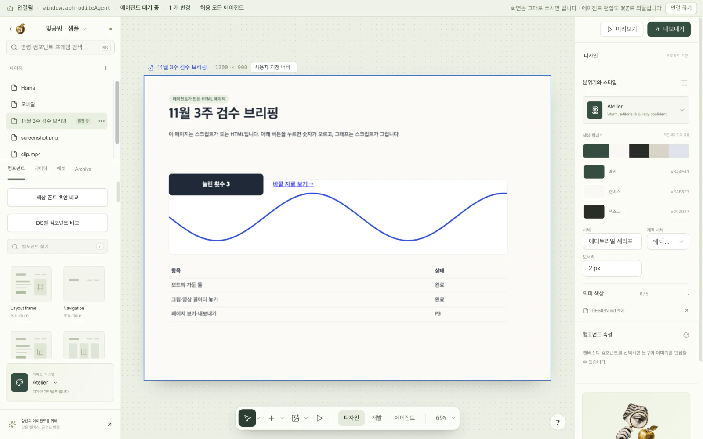
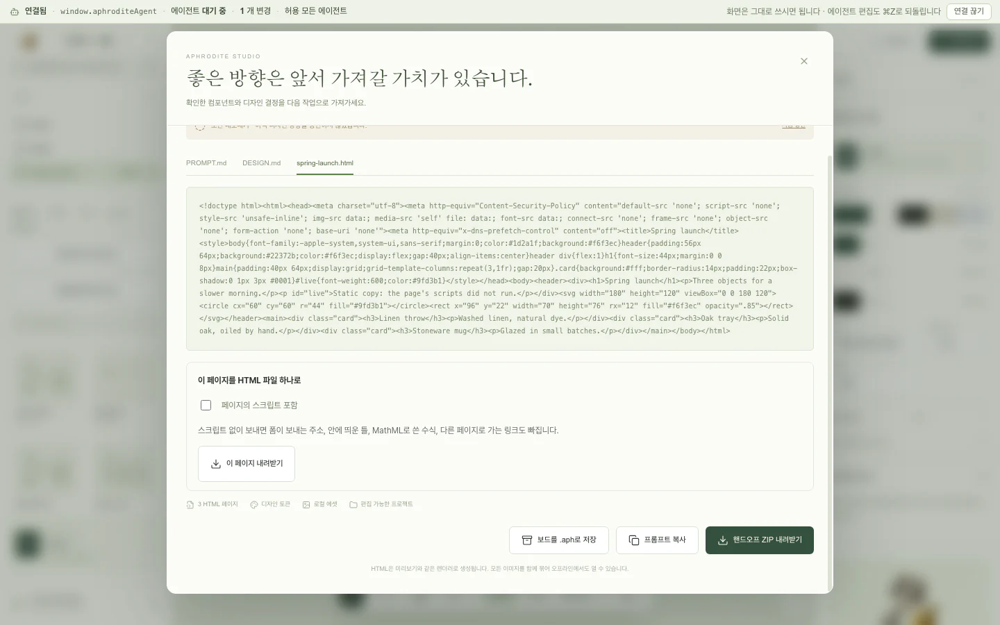

이 판으로 되는 것
- 터미널의 Claude Code와 Codex를 연결해, 보드에 HTML 페이지를 올리고 고칩니다.
- 스크린샷과 영상을 보드에 놓습니다.
- 보드는
.aph파일로, 페이지는 HTML 파일로 건넵니다. - 모든 변경에 누가, 왜 바꿨는지가 남습니다.
아티팩트로 보여 주던 브리핑과 보고서, pen이나 Claude Design으로 잡던 시안을 터미널의 Claude Code·Codex와 한 보드에서 만듭니다. 내부 팀이 먼저 쓰는 판입니다.
릴리스를 확인하는 중입니다. 이 판에서 달라진 것


보드. HTML 페이지와 스크린샷, 영상이 한 캔버스에 나란히 놓입니다.

Claude Code나 Codex가 HTML 페이지를 만들어 보드에 놓고, 말한 대로 고칩니다.

페이지 안으로 들어가, 실제로 그려지는 그대로 봅니다.

보드는 .aph 파일 하나로, 페이지는 HTML 파일 하나로 내보냅니다.
어느 쪽인지 모르겠다면 Apple 메뉴 > 이 Mac에 관하여에서 칩을 봅니다. Apple M으로 시작하면 Apple Silicon입니다.
0.2 기준 확인 중
연결해 주는 MCP 서버가 이 저장소 안에 있습니다. 명령은 git과 node로 돕니다.
git clone https://github.com/kwakseongjae/aphrodite-mela.gitClaude Code와 Codex 가운데 쓰는 쪽 하나만 넣습니다. /path/to/aphrodite-mela는 01에서 받은 폴더의 경로로 바꿉니다.
claude mcp add --transport stdio aphrodite -- node /path/to/aphrodite-mela/mcp/aphrodite-mcp/index.mjscodex mcp add aphrodite -- node /path/to/aphrodite-mela/mcp/aphrodite-mcp/index.mjs읽기는 늘 되고, 고치는 것은 사람이 켜 줘야 합니다. 에이전트가 요청하면 앱 가운데 창이 뜨고, 한 번 눌러 허용합니다.
aphrodite_guide를 먼저 읽고, 이번 주 할 일을 정리한 HTML 페이지 한 장을 보드에 만들어 줘.
.aph 파일로, 페이지는 HTML 파일로 건넵니다.